In this article, we discuss the following functions -
spLMexact()spLMstack()spGLMexact()spGLMstack()-
svcLMexact()andsvcLMstack() -
svcGLMexact()andsvcGLMstack()
These functions can be used to fit Gaussian and non-Gaussian spatial
point-referenced data, with spatial random effects (sp*) or
with spatially varying coefficients (svc*).
set.seed(1729)Bayesian Gaussian spatial regression models
In this section, we thoroughly illustrate our method on synthetic Gaussian as well as non-Gaussian spatial data and provide code to analyze the output of our functions. We start by loading the package.
The package lazy-loads the synthetic dataset simSpatial,
observed at 500 locations in the unit square. It has two covariates
x1 and x2, a spatial effect
z_true with a checkerboard pattern,
,
and one response for each family: Gaussian y_gauss, Poisson
y_pois, binomial y_binom (out of
n_trials trials) and binary y_bin. All the
responses share the covariates and the spatial effect, so we apply every
function in this article to the same data. The spatial effect is a
deterministic surface, not a draw from a Gaussian process, so we can see
how well the Gaussian process models recover it. See
?simSpatial for the code that generated the data.
data("simSpatial")
surfaceplot(simSpatial, coords_name = c("s1", "s2"), var_name = "z_true")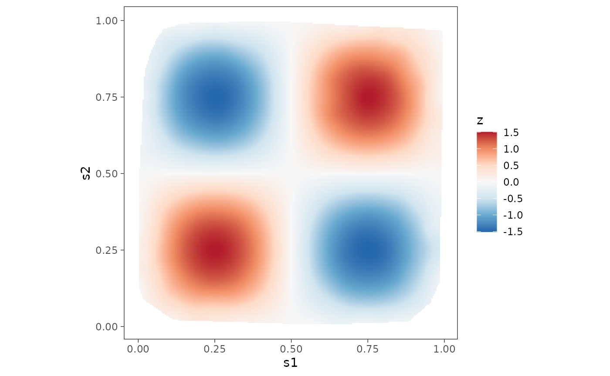
Using fixed hyperparameters
We first take the first 200 rows of the data and set up the priors.
Supplying the priors is optional. See the documentation of
spLMexact() to learn more about the default priors.
Besides, setting the priors, we also fix the values of the spatial
process parameters (spatial decay
and smoothness
)
and the noise-to-spatial variance ratio
().
dat <- simSpatial[1:200, ] # work with first 200 rows
muBeta <- c(0, 0, 0)
VBeta <- diag(1E4, 3)
sigmaSqIGa <- 2
sigmaSqIGb <- 2
phi0 <- 4
nu0 <- 1.75
noise_sp_ratio <- 0.1
prior_list <- list(beta.norm = list(muBeta, VBeta),
sigma.sq.ig = c(sigmaSqIGa, sigmaSqIGb))
nSamples <- 1000We define the spatial model using a formula, similar to
that in the widely used lm() function in the
stats package. Here, the formula
y_gauss ~ x1 + x2 corresponds to the spatial linear model
where y_gauss corresponds to the response variable
,
which is regressed on the predictors x1 and x2
given by
and
.
The intercept is automatically considered within the model, and hence
y_gauss ~ x1 + x2 is functionally equivalent to
y_gauss ~ 1 + x1 + x2. Moreover, a spatial random effect is
inherent in the model, where the spatial correlation matrix is governed
by the spatial correlation function specified by the argument
cor.fn. Supported correlation functions are
"exponential" and "matern". The exponential
covariogram is specified by the hyperparameter
and the Matern covariogram is specified by the hyperparameters
and
.
Fixed values of these hyperparameters are supplied through the argument
spParams. In addition, the noise-to-spatial variance ration
is also fixed through the argument noise_sp_ratio. Note
that
and
act together: the effective range, the distance at which the correlation
drops to 0.05, is
for
(exponential),
for
,
about
for
,
and about
for
.
For example,
with
corresponds to an effective range of about 1.3 on the unit square. When
the effective range is much larger than the extent of the data, a
spatial effect that is nearly constant over the domain is hard to tell
apart from the intercept: the data then determine
well, but not how it splits between
and
.
Values
give very smooth surfaces whose correlation matrices are nearly
singular, and are rarely needed.
If interested in calculation of leave-one-out predictive densities
(LOO-PD), loopd must be set TRUE (the default
is FALSE). Method of LOO-PD calculation can be also set by
the option loopd.method which support the keywords
"exact" and "psis". The option
"exact" exploits the analytically available expressions of
the predictive density and implements an efficient row-deletion Cholesky
factor update for fast calculation and avoids refitting the model
times, where
is the sample size. On the other hand, "psis" implements
Pareto-smoothed importance sampling and finds approximate LOO-PD and is
much faster than "exact".
We pass these arguments into the function
spLMexact().
mod1 <- spLMexact(y_gauss ~ x1 + x2, data = dat,
coords = as.matrix(dat[, c("s1", "s2")]),
cor.fn = "matern",
priors = prior_list,
spParams = list(phi = phi0, nu = nu0),
noise_sp_ratio = noise_sp_ratio, n.samples = nSamples,
loopd = TRUE, loopd.method = "exact",
verbose = TRUE)
#> ----------------------------------------
#> Model description
#> ----------------------------------------
#> Model fit with 200 observations.
#>
#> Number of covariates 3 (including intercept).
#>
#> Using the matern spatial correlation function.
#>
#> Priors:
#> beta: Gaussian
#> mu: 0.00 0.00 0.00
#> cov:
#> 10000.00 0.00 0.00
#> 0.00 10000.00 0.00
#> 0.00 0.00 10000.00
#>
#> sigma.sq: Inverse-Gamma
#> shape = 2.00, scale = 2.00.
#>
#> Spatial process parameters:
#> phi = 4.00, and, nu = 1.75.
#> Noise-to-spatial variance ratio = 0.10.
#>
#> Number of posterior samples = 1000.
#>
#> LOO-PD calculation method = exact.
#> ----------------------------------------Next, we can summarize the posterior samples of the fixed effects as follows.
post_beta <- mod1$samples$beta
summary_beta <- t(apply(post_beta, 1, function(x) quantile(x, c(0.025, 0.5, 0.975))))
rownames(summary_beta) <- mod1$X.names
print(summary_beta)
#> 2.5% 50% 97.5%
#> (Intercept) 0.2593375 2.0950784 3.7907408
#> x1 4.8754455 4.9459705 5.0093922
#> x2 -1.0577566 -0.9878126 -0.9139223Leave-one-out predictive densities using PSIS
Out of curiosity, we find the LOO-PD for the same model using the approximate method that uses Pareto-smoothed importance sampling, or PSIS. See Vehtari et al. (2017) for details.
mod2 <- spLMexact(y_gauss ~ x1 + x2, data = dat,
coords = as.matrix(dat[, c("s1", "s2")]),
cor.fn = "matern",
priors = prior_list,
spParams = list(phi = phi0, nu = nu0),
noise_sp_ratio = noise_sp_ratio, n.samples = nSamples,
loopd = TRUE, loopd.method = "PSIS",
verbose = FALSE)Subsquently, we compare the LOO-PD obtained by the two methods.
loopd_exact <- mod1$loopd
loopd_psis <- mod2$loopd
loopd_df <- data.frame(exact = loopd_exact, psis = loopd_psis)
library(ggplot2)
plot1 <- ggplot(data = loopd_df, aes(x = exact)) +
geom_point(aes(y = psis), size = 1, alpha = 0.5) +
geom_abline(slope = 1, intercept = 0, color = "red", alpha = 0.5) +
xlab("Exact") + ylab("PSIS") + theme_bw() +
theme(panel.background = element_blank(),
panel.grid = element_blank(), aspect.ratio = 1)
plot1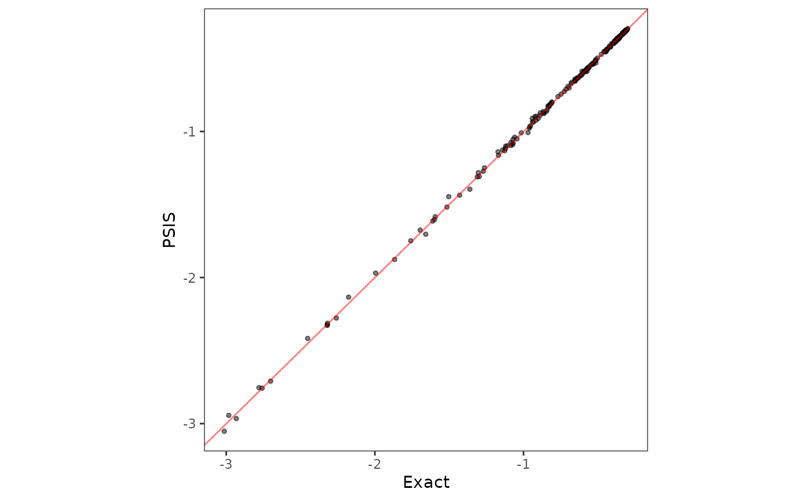
Using predictive stacking
Next, we move on to the Bayesian spatial stacking algorithm for
Gaussian data. We supply the same prior list and provide candidate
models constructed using candidateModels(). The candidate
values should bracket the plausible values of the parameters. Stacking
combines the predictive distributions of the candidate models, so it
typically places its weight on a few candidates near the best values,
mixing neighbouring candidates when the best values lie between grid
points; candidates that predict poorly get zero weight.
cand.mod <- candidateModels(list(phi = c(2, 4, 6, 8),
nu = c(0.5, 1, 1.5, 1.75),
noise_sp_ratio = c(0.1, 0.5)),
"cartesian")
mod3 <- spLMstack(y_gauss ~ x1 + x2, data = dat,
coords = as.matrix(dat[, c("s1", "s2")]),
cor.fn = "matern",
priors = prior_list,
candidate.models = cand.mod,
n.samples = 1000, loopd.method = "exact",
parallel = FALSE, verbose = TRUE)
#>
#> STACKING WEIGHTS:
#>
#> | phi | nu | noise_sp_ratio | weight |
#> +----------+-----+------+----------------+--------+
#> | Model 1 | 2| 0.50| 0.1| 0.000 |
#> | Model 2 | 4| 0.50| 0.1| 0.000 |
#> | Model 3 | 6| 0.50| 0.1| 0.000 |
#> | Model 4 | 8| 0.50| 0.1| 0.000 |
#> | Model 5 | 2| 1.00| 0.1| 0.000 |
#> | Model 6 | 4| 1.00| 0.1| 0.000 |
#> | Model 7 | 6| 1.00| 0.1| 0.000 |
#> | Model 8 | 8| 1.00| 0.1| 0.000 |
#> | Model 9 | 2| 1.50| 0.1| 0.109 |
#> | Model 10 | 4| 1.50| 0.1| 0.000 |
#> | Model 11 | 6| 1.50| 0.1| 0.000 |
#> | Model 12 | 8| 1.50| 0.1| 0.000 |
#> | Model 13 | 2| 1.75| 0.1| 0.000 |
#> | Model 14 | 4| 1.75| 0.1| 0.891 |
#> | Model 15 | 6| 1.75| 0.1| 0.000 |
#> | Model 16 | 8| 1.75| 0.1| 0.000 |
#> | Model 17 | 2| 0.50| 0.5| 0.000 |
#> | Model 18 | 4| 0.50| 0.5| 0.000 |
#> | Model 19 | 6| 0.50| 0.5| 0.000 |
#> | Model 20 | 8| 0.50| 0.5| 0.000 |
#> | Model 21 | 2| 1.00| 0.5| 0.000 |
#> | Model 22 | 4| 1.00| 0.5| 0.000 |
#> | Model 23 | 6| 1.00| 0.5| 0.000 |
#> | Model 24 | 8| 1.00| 0.5| 0.000 |
#> | Model 25 | 2| 1.50| 0.5| 0.000 |
#> | Model 26 | 4| 1.50| 0.5| 0.000 |
#> | Model 27 | 6| 1.50| 0.5| 0.000 |
#> | Model 28 | 8| 1.50| 0.5| 0.000 |
#> | Model 29 | 2| 1.75| 0.5| 0.000 |
#> | Model 30 | 4| 1.75| 0.5| 0.000 |
#> | Model 31 | 6| 1.75| 0.5| 0.000 |
#> | Model 32 | 8| 1.75| 0.5| 0.000 |
#> +----------+-----+------+----------------+--------+The user can check the solver used for the stacking weights, its
status, and the runtime by issuing the following. The
diagnostics element also holds numerical diagnostics of
each candidate model.
Analyzing samples from the stacked posterior
To sample from the stacked posterior, the package provides a helper
function called stackedSampler(). Subsequent inference
proceeds from these samples obtained from the stacked posterior.
post_samps <- stackedSampler(mod3)We then collect the samples of the fixed effects and summarize them as follows.
post_beta <- post_samps$beta
summary_beta <- t(apply(post_beta, 1, function(x) quantile(x, c(0.025, 0.5, 0.975))))
rownames(summary_beta) <- mod3$X.names
print(summary_beta)
#> 2.5% 50% 97.5%
#> (Intercept) 0.1676296 1.9844450 3.8604981
#> x1 4.8801705 4.9458360 5.0085880
#> x2 -1.0597316 -0.9896297 -0.9127652The response y_gauss was simulated using the true value
.
We notice that the stacked posterior is concentrated around the
truth.
library(tidyr)
library(dplyr)
#>
#> Attaching package: 'dplyr'
#> The following objects are masked from 'package:stats':
#>
#> filter, lag
#> The following objects are masked from 'package:base':
#>
#> intersect, setdiff, setequal, union
post_beta_df <- as.data.frame(post_beta)
post_beta_df <- post_beta_df %>%
mutate(row = paste0("beta", row_number()-1)) %>%
pivot_longer(-row, names_to = "sample", values_to = "value")
# True values of beta0, beta1 and beta2
truth <- data.frame(row = c("beta0", "beta1", "beta2"), true_value = c(2, 5, -1))
ggplot(post_beta_df, aes(x = value)) +
geom_density(fill = "lightblue", alpha = 0.6) +
geom_vline(data = truth, aes(xintercept = true_value),
color = "red", linetype = "dashed", linewidth = 0.5) +
facet_wrap(~ row, scales = "free") + labs(x = "", y = "Density") +
theme_bw() + theme(panel.background = element_blank(),
panel.grid = element_blank(), aspect.ratio = 1)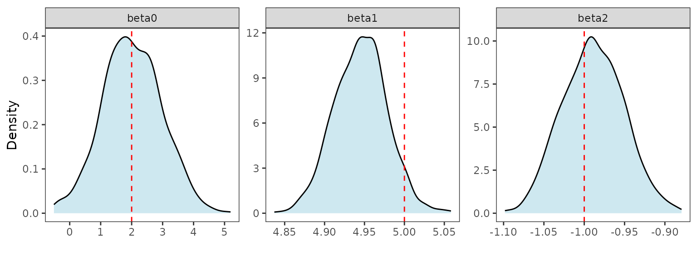
Furthermore, we compare the posterior samples of the spatial random effects with their corresponding true values.
post_z <- post_samps$z
post_z_summ <- t(apply(post_z, 1, function(x) quantile(x, c(0.025, 0.5, 0.975))))
z_combn <- data.frame(z = dat$z_true, zL = post_z_summ[, 1],
zM = post_z_summ[, 2], zU = post_z_summ[, 3])
plotz <- ggplot(data = z_combn, aes(x = z)) +
geom_point(aes(y = zM), size = 0.75, color = "darkblue", alpha = 0.5) +
geom_errorbar(aes(ymin = zL, ymax = zU), width = 0.05, alpha = 0.15,
color = "skyblue") +
geom_abline(slope = 1, intercept = 0, color = "red") +
xlab("True z") + ylab("Stacked posterior of z") + theme_bw() +
theme(panel.background = element_blank(),
panel.grid = element_blank(), aspect.ratio = 1)
plotz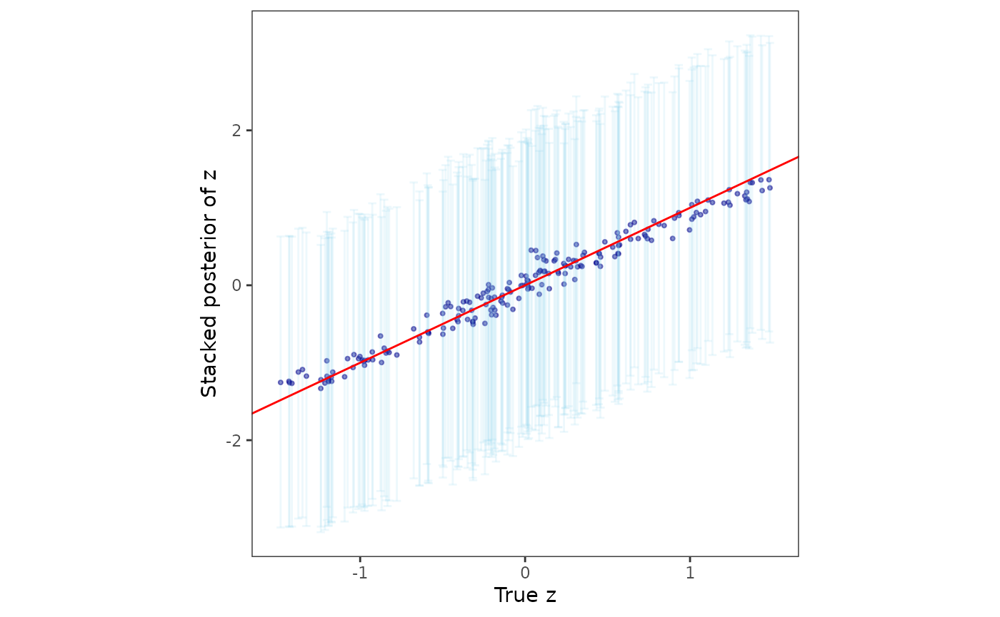
The package also provides helper functions to plot interpolated
spatial surfaces in order for visualization purposes. The function
surfaceplot() creates a single spatial surface plot, while
surfaceplot2() creates two side-by-side surface plots. We
are using the later to visually inspect the interpolated spatial
surfaces of the true spatial effects and their posterior medians.
postmedian_z <- apply(post_z, 1, median)
dat$z_hat <- postmedian_z
plot_z <- surfaceplot2(dat, coords_name = c("s1", "s2"),
var1_name = "z_true", var2_name = "z_hat")
patchwork::wrap_plots(plot_z) +
patchwork::plot_layout(guides = "collect") &
ggplot2::theme(legend.position = "right")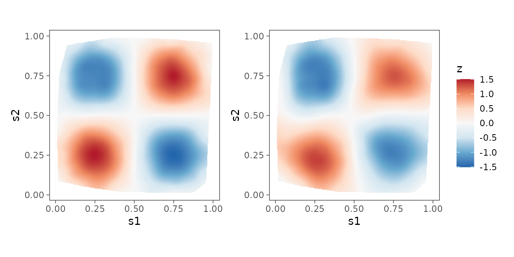
Analysis of spatial non-Gaussian data
We also offer functions for Bayesian analysis of spatially point-referenced Poisson, binomial count, and binary data.
Spatial Poisson count data
We plot the Poisson counts y_pois at the same 200
locations.
ggplot(dat, aes(x = s1, y = s2)) +
geom_point(aes(color = y_pois), alpha = 0.75) +
scale_color_distiller(palette = "RdBu", direction = -1,
label = function(x) sprintf("%.0f", x)) +
guides(alpha = 'none') + theme_bw() +
theme(axis.ticks = element_line(linewidth = 0.25),
panel.background = element_blank(), panel.grid = element_blank(),
legend.title = element_text(size = 10, hjust = 0.25),
legend.box.just = "center", aspect.ratio = 1)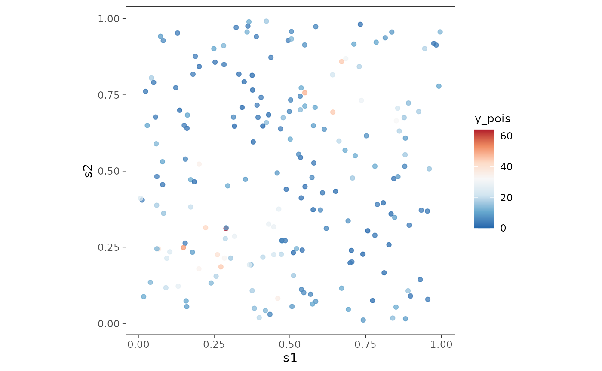
Under fixed hyperparameters
Next, we demonstrate the function spGLMexact() which
delivers posterior samples of the fixed effects and the spatial random
effects. The option family must be specified correctly
while using this function. For instance, in the following example, the
formula y_pois ~ x1 + x2 and
family = "poisson" corresponds to the spatial regression
model
We provide fixed values of the spatial process parameters and a
boundary adjustment parameter, given by the argument
boundary, which if not supplied, defaults to 0.5. For
details on the priors and its default value, see function
documentation.
mod1 <- spGLMexact(y_pois ~ x1 + x2, data = dat, family = "poisson",
coords = as.matrix(dat[, c("s1", "s2")]), cor.fn = "matern",
spParams = list(phi = phi0, nu = nu0),
priors = list(nu.beta = 5, nu.z = 5),
boundary = 0.5,
n.samples = 1000, verbose = TRUE)
#> Some priors were not supplied. Using defaults.
#> ----------------------------------------
#> Model description
#> ----------------------------------------
#> Model fit with 200 observations.
#>
#> Family = poisson.
#>
#> Number of covariates 3 (including intercept).
#>
#> Using the matern spatial correlation function.
#>
#> Priors:
#> beta: Gaussian
#> mu: 0.00 0.00 0.00
#> cov:
#> 100.00 0.00 0.00
#> 0.00 100.00 0.00
#> 0.00 0.00 100.00
#>
#> sigmaSq.beta ~ IG(nu.beta/2, nu.beta/2)
#> sigmaSq.z ~ IG(nu.z/2, nu.z/2)
#> nu.beta = 5.00, nu.z = 5.00.
#> sigmaSq.xi = 0.10.
#> Boundary adjustment parameter = 0.50.
#>
#> Spatial process parameters:
#> phi = 4.00, and, nu = 1.75.
#>
#> Number of posterior samples = 1000.
#> ----------------------------------------We next collect the samples of the fixed effects and summarize them.
The true value of the fixed effects with which the data was simulated is
(for more details, see the documentation of the data
simSpatial).
post_beta <- mod1$samples$beta
summary_beta <- t(apply(post_beta, 1, function(x) quantile(x, c(0.025, 0.5, 0.975))))
rownames(summary_beta) <- mod1$X.names
print(summary_beta)
#> 2.5% 50% 97.5%
#> (Intercept) 0.4648574 1.8693588 3.5106584
#> x1 -0.6892104 -0.5749415 -0.4792360
#> x2 0.1465937 0.2263370 0.3052922Posterior recovery of scale parameters
The analytic tractability of the posterior distribution under the
framework is enabled by marginalizing out the scale parameters
and
associated with the fixed effects
and the spatial random effects
,
respectively. However, posterior samples of
and
can be recovered using the function recoverGLMscale().
mod1 <- recoverGLMscale(mod1)We visualize the posterior distributions of and through histograms.
post_scale_df <- data.frame(value = sqrt(c(mod1$samples$sigmasq.beta, mod1$samples$sigmasq.z)),
group = factor(rep(c("sigma.beta", "sigma.z"),
each = length(mod1$samples$sigmasq.beta))))
ggplot(post_scale_df, aes(x = value)) +
geom_density(fill = "lightblue", alpha = 0.6) +
facet_wrap(~ group, scales = "free") + labs(x = "", y = "Density") +
theme_bw() + theme(panel.background = element_blank(),
panel.grid = element_blank(), aspect.ratio = 1)
Using predictive stacking
Next, we move on to the function spGLMstack() that will
implement our proposed stacking algorithm. The argument
loopd.controls is used to provide details on what algorithm
to be used to find LOO-PD. Valid options for the tag method
is "exact" and "CV". We use
-fold
cross-validation by assigning method = "CV"and
CV.K = 10. The tag nMC decides the number of
Monte Carlo samples to be used to find the LOO-PD.
cand.mod <- candidateModels(list(phi = c(2, 4, 6, 8),
nu = c(0.5, 1, 1.5, 1.75),
boundary = c(0.5, 0.75)), "cartesian")
mod2 <- spGLMstack(y_pois ~ x1 + x2, data = dat, family = "poisson",
coords = as.matrix(dat[, c("s1", "s2")]), cor.fn = "matern",
candidate.models = cand.mod,
n.samples = 1000,
loopd.controls = list(method = "CV", CV.K = 10, nMC = 1000),
parallel = FALSE, verbose = TRUE)
#>
#> STACKING WEIGHTS:
#>
#> | phi | nu | boundary | weight |
#> +----------+-----+------+----------+--------+
#> | Model 1 | 2| 0.50| 0.50| 0.000 |
#> | Model 2 | 4| 0.50| 0.50| 0.000 |
#> | Model 3 | 6| 0.50| 0.50| 0.000 |
#> | Model 4 | 8| 0.50| 0.50| 0.000 |
#> | Model 5 | 2| 1.00| 0.50| 0.000 |
#> | Model 6 | 4| 1.00| 0.50| 0.000 |
#> | Model 7 | 6| 1.00| 0.50| 0.000 |
#> | Model 8 | 8| 1.00| 0.50| 0.000 |
#> | Model 9 | 2| 1.50| 0.50| 0.000 |
#> | Model 10 | 4| 1.50| 0.50| 0.000 |
#> | Model 11 | 6| 1.50| 0.50| 0.000 |
#> | Model 12 | 8| 1.50| 0.50| 0.000 |
#> | Model 13 | 2| 1.75| 0.50| 0.000 |
#> | Model 14 | 4| 1.75| 0.50| 0.000 |
#> | Model 15 | 6| 1.75| 0.50| 0.000 |
#> | Model 16 | 8| 1.75| 0.50| 0.085 |
#> | Model 17 | 2| 0.50| 0.75| 0.000 |
#> | Model 18 | 4| 0.50| 0.75| 0.000 |
#> | Model 19 | 6| 0.50| 0.75| 0.000 |
#> | Model 20 | 8| 0.50| 0.75| 0.000 |
#> | Model 21 | 2| 1.00| 0.75| 0.000 |
#> | Model 22 | 4| 1.00| 0.75| 0.000 |
#> | Model 23 | 6| 1.00| 0.75| 0.000 |
#> | Model 24 | 8| 1.00| 0.75| 0.000 |
#> | Model 25 | 2| 1.50| 0.75| 0.000 |
#> | Model 26 | 4| 1.50| 0.75| 0.000 |
#> | Model 27 | 6| 1.50| 0.75| 0.000 |
#> | Model 28 | 8| 1.50| 0.75| 0.000 |
#> | Model 29 | 2| 1.75| 0.75| 0.000 |
#> | Model 30 | 4| 1.75| 0.75| 0.000 |
#> | Model 31 | 6| 1.75| 0.75| 0.915 |
#> | Model 32 | 8| 1.75| 0.75| 0.000 |
#> +----------+-----+------+----------+--------+We can extract information on the solver used for the stacking weights, its status, and the runtime by the following.
print(mod2$diagnostics$solver$used)
#> [1] "CVXR:CLARABEL"
print(mod2$diagnostics$solver$status)
#> [1] "optimal"
print(mod2$run.time)
#> user system elapsed
#> 31.081 39.464 18.375Further, we can recover the posterior samples of the scale parameters
by passing the output obtained by running spGLMstack() once
again through recoverGLMscale().
mod2 <- recoverGLMscale(mod2)Sampling from stacked posterior
We first obtain final posterior samples by sampling from the stacked sampler.
post_samps <- stackedSampler(mod2)Subsequently, we summarize the posterior samples of the fixed effects.
post_beta <- post_samps$beta
summary_beta <- t(apply(post_beta, 1, function(x) quantile(x, c(0.025, 0.5, 0.975))))
rownames(summary_beta) <- mod2$X.names
print(summary_beta)
#> 2.5% 50% 97.5%
#> (Intercept) -0.1184183 1.9207219 3.8246820
#> x1 -0.6418614 -0.5188044 -0.4271350
#> x2 0.1252065 0.2172837 0.3130309The response y_pois was simulated using
.
post_beta_df <- as.data.frame(post_beta)
post_beta_df <- post_beta_df %>%
mutate(row = paste0("beta", row_number()-1)) %>%
pivot_longer(-row, names_to = "sample", values_to = "value")
# True values of beta0, beta1 and beta2
truth <- data.frame(row = c("beta0", "beta1", "beta2"), true_value = c(2, -0.5, 0.3))
ggplot(post_beta_df, aes(x = value)) +
geom_density(fill = "lightblue", alpha = 0.6) +
geom_vline(data = truth, aes(xintercept = true_value),
color = "red", linetype = "dashed", linewidth = 0.5) +
facet_wrap(~ row, scales = "free") + labs(x = "", y = "Density") +
theme_bw() + theme(panel.background = element_blank(),
panel.grid = element_blank(), aspect.ratio = 1)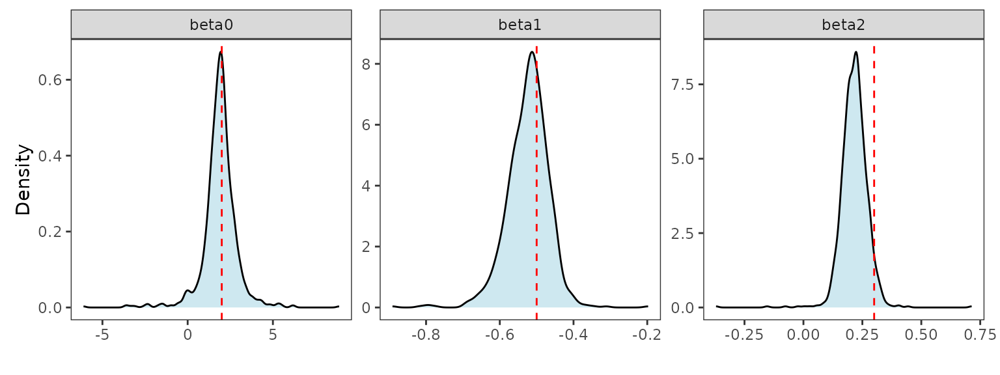
Finally, we analyze the posterior samples of the spatial random effects.
post_z <- post_samps$z
post_z_summ <- t(apply(post_z, 1, function(x) quantile(x, c(0.025, 0.5, 0.975))))
z_combn <- data.frame(z = dat$z_true, zL = post_z_summ[, 1],
zM = post_z_summ[, 2], zU = post_z_summ[, 3])
plotz <- ggplot(data = z_combn, aes(x = z)) +
geom_point(aes(y = zM), size = 0.75, color = "darkblue", alpha = 0.5) +
geom_errorbar(aes(ymin = zL, ymax = zU), width = 0.05, alpha = 0.15,
color = "skyblue") +
geom_abline(slope = 1, intercept = 0, color = "red") +
xlab("True z") + ylab("Stacked posterior of z") + theme_bw() +
theme(panel.background = element_blank(),
panel.grid = element_blank(), aspect.ratio = 1)
plotz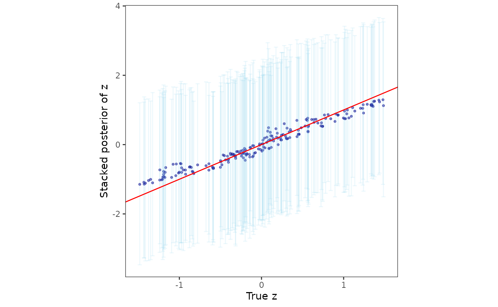
We can also compare the interpolated spatial surfaces of the true spatial effects with that of their posterior median.
postmedian_z <- apply(post_z, 1, median)
dat$z_hat <- postmedian_z
plot_z <- surfaceplot2(dat, coords_name = c("s1", "s2"),
var1_name = "z_true", var2_name = "z_hat")
patchwork::wrap_plots(plot_z) +
patchwork::plot_layout(guides = "collect") &
ggplot2::theme(legend.position = "right")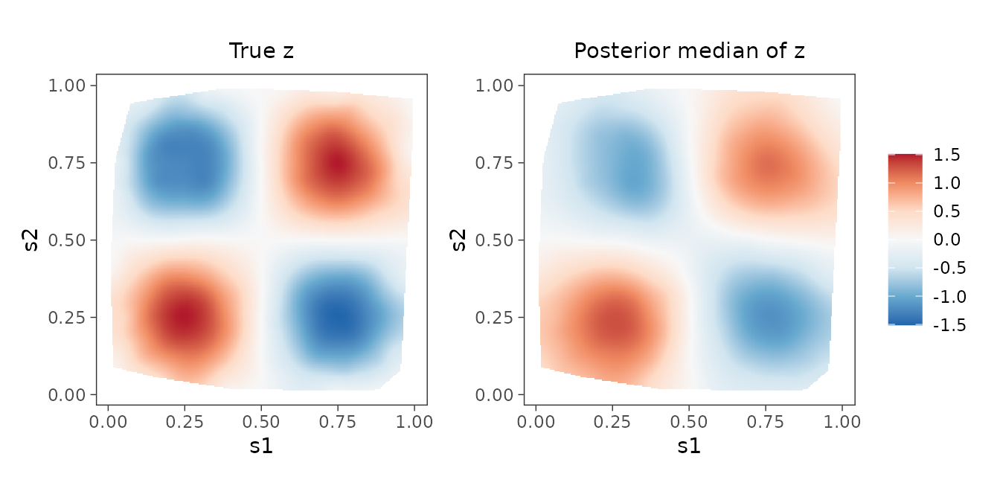
Spatial binomial count data
This will follow the same workflow as Poisson data with the exception
that the structure of formula that defines the model will
also contain the total number of trials at each location. We use the
binomial counts y_binom out of n_trials trials
at the same 200 locations. Here, we present only the
spGLMexact() function for brevity.
mod1 <- spGLMexact(cbind(y_binom, n_trials) ~ x1 + x2, data = dat, family = "binomial",
coords = as.matrix(dat[, c("s1", "s2")]), cor.fn = "matern",
spParams = list(phi = 4, nu = 1.75),
boundary = 0.75, n.samples = 1000, verbose = FALSE)Similarly, we collect the posterior samples of the fixed effects and summarize them. The true value of the fixed effects with which the data was simulated is .
post_beta <- mod1$samples$beta
summary_beta <- t(apply(post_beta, 1, function(x) quantile(x, c(0.025, 0.5, 0.975))))
rownames(summary_beta) <- mod1$X.names
print(summary_beta)
#> 2.5% 50% 97.5%
#> (Intercept) -2.3539324 0.3690014 2.750959
#> x1 -0.5818462 -0.4603834 -0.341955
#> x2 0.4061823 0.5326127 0.657267Spatial binary data
Finally, we present only the spGLMexact() function for
the spatial binary data y_bin to avoid repetition. In this
case, unlike the binomial model, almost nothing changes from that of in
the case of spatial Poisson data.
mod1 <- spGLMexact(y_bin ~ x1 + x2, data = dat, family = "binary",
coords = as.matrix(dat[, c("s1", "s2")]), cor.fn = "matern",
spParams = list(phi = 4, nu = 1.75),
boundary = 0.75, n.samples = 1000, verbose = FALSE)Similarly, we collect the posterior samples of the fixed effects and summarize them. The true value of the fixed effects with which the data was simulated is .
post_beta <- mod1$samples$beta
summary_beta <- t(apply(post_beta, 1, function(x) quantile(x, c(0.025, 0.5, 0.975))))
rownames(summary_beta) <- mod1$X.names
print(summary_beta)
#> 2.5% 50% 97.5%
#> (Intercept) -2.27294685 0.1883535 2.90099020
#> x1 -0.56571333 -0.3215925 -0.09382391
#> x2 -0.03810248 0.2146429 0.46852522Spatially varying coefficients models
The effect of a covariate may itself vary over space. The functions
svcLMexact() and svcLMstack() fit the Gaussian
linear model with spatially varying coefficients
where
holds the
covariates with spatially varying coefficients and each
,
,
is an independent Gaussian process with variance
and an exponential or Matérn correlation function with decay
and smoothness
.
As for spLMexact(), the joint posterior is available in
closed form and is sampled exactly, and the leave-one-out predictive
densities are found in closed form. The functions
svcGLMexact() and svcGLMstack() fit the
corresponding Poisson, binomial and binary models. These are the spatial
counterparts of the spatial-temporal functions
stvcLMexact(), stvcLMstack(),
stvcGLMexact() and stvcGLMstack() (see the
article on spatial-temporal models), which use the Gneiting space-time
correlation function.
In the formula, the variables in parentheses receive
varying coefficients: y ~ x1 + x2 + (x1) has fixed effects
for the intercept, x1 and x2, and varying
coefficients for the intercept and x1 (the intercept is
included in both parts by default). The argument
process.type decides how the
processes are parametrized. With
process.type = "independent.shared", they share one
;
with process.type = "independent", each has its own,
supplied as vectors of length
.
The GLM functions also offer process.type = "multivariate",
a multivariate Gaussian process with an inverse-Wishart prior on the
cross-covariance matrix.
The responses y_svc (Gaussian) and
y_svc_pois (Poisson) of simSpatial have a
spatially varying intercept and a spatially varying slope of
,
where the varying intercept
is the ring pattern z2_true,
with
,
and the varying part of the slope
is the checkerboard z_true from before. Both are centred to
have mean zero over the unit square, so that the fixed effects
and
are the average intercept and slope. We take the same 200 locations as
before.
dat <- simSpatial[1:200, ]
n <- nrow(dat)
plot_true <- surfaceplot2(dat, coords_name = c("s1", "s2"),
var1_name = "z2_true", var2_name = "z_true")
patchwork::wrap_plots(plot_true) +
patchwork::plot_layout(guides = "collect") &
ggplot2::theme(legend.position = "right")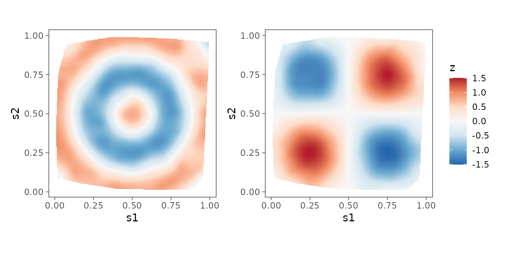
Using fixed hyperparameters
The ring pattern of the intercept varies on a finer scale than the
checkerboard of the slope, so we give the intercept process a larger
spatial decay with process.type = "independent".
mod_svc1 <- svcLMexact(y_svc ~ x1 + x2 + (x1), data = dat,
coords = as.matrix(dat[, c("s1", "s2")]),
cor.fn = "matern", process.type = "independent",
spParams = list(phi = c(8, 4), nu = c(1.5, 1.5)),
noise_sp_ratio = c(0.25, 0.25),
n.samples = 1000, loopd = TRUE, verbose = TRUE)
#> ----------------------------------------
#> Model description
#> ----------------------------------------
#> Model fit with 200 observations.
#>
#> Number of covariates 3 (including intercept).
#> Number of covariates with spatially varying coefficients 2.
#>
#> Using the matern spatial correlation function.
#> Process type: independent.
#>
#> Priors:
#> beta flat.
#> sigma.sq: flat, proportional to 1/sigma.sq.
#>
#> Spatial process parameters:
#> process 1: phi = 8.00, nu = 1.50, noise-to-spatial variance ratio = 0.25.
#> process 2: phi = 4.00, nu = 1.50, noise-to-spatial variance ratio = 0.25.
#>
#> Number of posterior samples = 1000.
#>
#> LOO-PD calculation method = exact.
#> ----------------------------------------The posterior samples of the fixed effects, the noise variance , and the process variances are summarized below.
summary_beta <- t(apply(mod_svc1$samples$beta, 1, function(x) quantile(x, c(0.025, 0.5, 0.975))))
rownames(summary_beta) <- mod_svc1$X.names
print(summary_beta)
#> 2.5% 50% 97.5%
#> (Intercept) 1.396123 2.160469 2.8984346
#> x1 3.976377 5.074585 6.0823018
#> x2 -1.088830 -1.006246 -0.9280821
print(quantile(mod_svc1$samples$sigmaSq, c(0.025, 0.5, 0.975)))
#> 2.5% 50% 97.5%
#> 0.1843816 0.2217701 0.2733229
print(t(apply(mod_svc1$samples$sigmaSq.z, 1, function(x) quantile(x, c(0.025, 0.5, 0.975)))))
#> 2.5% 50% 97.5%
#> [1,] 0.7375266 0.8870806 1.093292
#> [2,] 0.7375266 0.8870806 1.093292Using predictive stacking
Next, we stack over candidate values of the pairs
,
and
of the two processes. For process.type = "independent",
each candidate value is a vector of length
,
supplied as list() entries in
candidateModels(). Candidate models that share
share the factorizations of the spatial correlation matrices.
cand.svc <- candidateModels(list(phi = list(c(4, 4), c(8, 2), c(8, 4), c(8, 8), c(12, 4)),
nu = list(c(1, 1), c(1.5, 1.5)),
noise_sp_ratio = list(c(0.1, 0.1), c(0.25, 0.25), c(0.5, 0.5))),
"cartesian")
mod_svc2 <- svcLMstack(y_svc ~ x1 + x2 + (x1), data = dat,
coords = as.matrix(dat[, c("s1", "s2")]),
cor.fn = "matern", process.type = "independent",
candidate.models = cand.svc,
n.samples = 1000, verbose = FALSE)
mod_svc2$stacking.summary[mod_svc2$stacking.weights > 0.01, ]
#> phi[1] phi[2] nu[1] nu[2] noise_sp_ratio[1] noise_sp_ratio[2] weight
#> Model 4 8 8 1.0 1.0 0.10 0.10 0.172
#> Model 8 8 4 1.5 1.5 0.10 0.10 0.056
#> Model 18 8 4 1.5 1.5 0.25 0.25 0.772
post_svc <- stackedSampler(mod_svc2)The samples of are stacked by process: rows hold the varying intercept and rows the varying part of the slope . We compare them with their true values.
plot_vs_truth <- function(truth, samps, lab){
summ <- t(apply(samps, 1, function(x) quantile(x, c(0.025, 0.5, 0.975))))
df <- data.frame(truth = truth, L = summ[, 1], M = summ[, 2], U = summ[, 3])
ggplot(data = df, aes(x = truth)) +
geom_point(aes(y = M), size = 0.75, color = "darkblue", alpha = 0.5) +
geom_errorbar(aes(ymin = L, ymax = U), width = 0.05, alpha = 0.15,
color = "skyblue") +
geom_abline(slope = 1, intercept = 0, color = "red") +
xlab(paste("True", lab)) + ylab(paste("Stacked posterior of", lab)) +
theme_bw() + theme(panel.background = element_blank(),
panel.grid = element_blank(), aspect.ratio = 1)
}
z0_samps <- post_svc$z[seq_len(n), ]
z1_samps <- post_svc$z[n + seq_len(n), ]
plot_vs_truth(dat$z2_true, z0_samps, "z0") + plot_vs_truth(dat$z_true, z1_samps, "z1")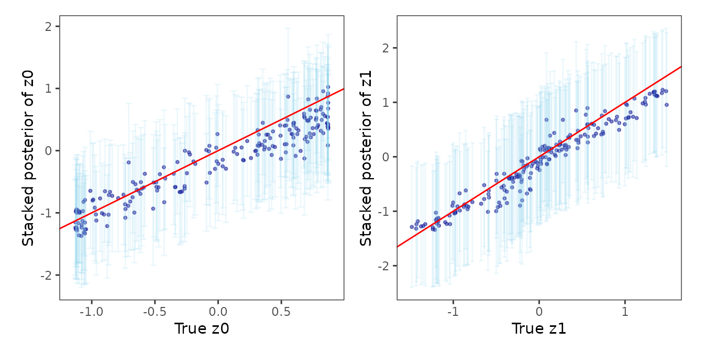
The data separate the fixed intercept
from the varying intercept
only weakly: their sum
is well identified, but the posterior of
is wide (see the summary of mod_svc1 above), so the
posterior of
can sit slightly off the line of equality while its credible intervals
still cover the truth. The same holds for
and
.
Finally, we compare the interpolated surfaces of the true varying coefficients and their posterior medians.
dat$z0_hat <- apply(z0_samps, 1, median)
dat$z1_hat <- apply(z1_samps, 1, median)
plot_z0 <- surfaceplot2(dat, coords_name = c("s1", "s2"),
var1_name = "z2_true", var2_name = "z0_hat")
patchwork::wrap_plots(plot_z0) +
patchwork::plot_layout(guides = "collect") &
ggplot2::theme(legend.position = "right")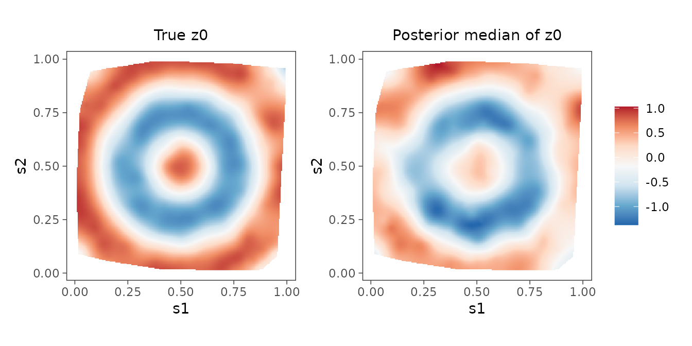
plot_z1 <- surfaceplot2(dat, coords_name = c("s1", "s2"),
var1_name = "z_true", var2_name = "z1_hat")
patchwork::wrap_plots(plot_z1) +
patchwork::plot_layout(guides = "collect") &
ggplot2::theme(legend.position = "right")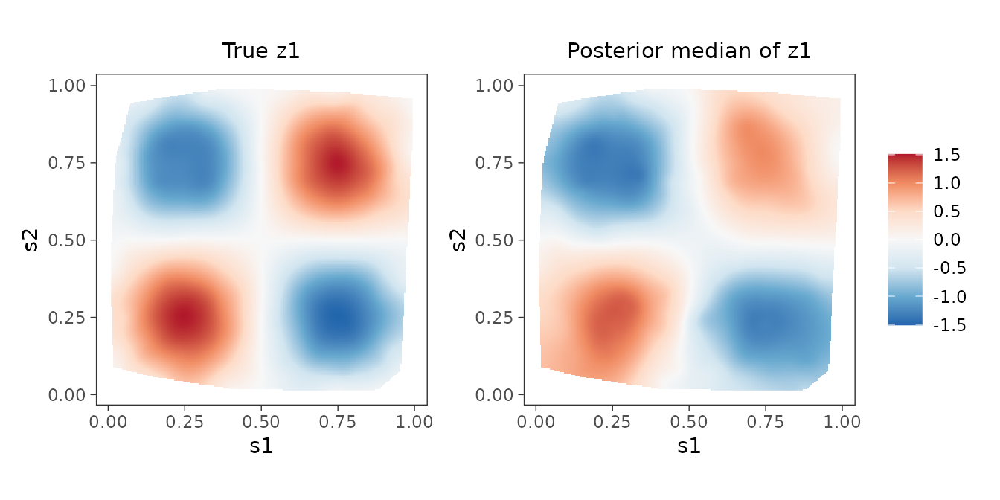
Poisson count data with spatially varying coefficients
The workflow for the non-Gaussian responses is the same, with
boundary in place of the noise-to-spatial variance ratio.
We stack the Poisson model for y_svc_pois over candidate
values of
and the boundary adjustment parameter.
cand.svc.pois <- candidateModels(list(phi = list(c(4, 4), c(8, 2), c(8, 4), c(8, 8), c(12, 4)),
nu = list(c(1.5, 1.5)),
boundary = c(0.5, 0.75)),
"cartesian")
mod_svc3 <- svcGLMstack(y_svc_pois ~ x1 + x2 + (x1), data = dat,
family = "poisson",
coords = as.matrix(dat[, c("s1", "s2")]),
cor.fn = "matern", process.type = "independent",
candidate.models = cand.svc.pois,
n.samples = 1000, verbose = FALSE)
mod_svc3$stacking.summary[mod_svc3$stacking.weights > 0.01, ]
#> phi[1] phi[2] nu[1] nu[2] boundary weight
#> Model 3 8 4 1.5 1.5 0.50 0.483
#> Model 8 8 4 1.5 1.5 0.75 0.517
post_svc_pois <- stackedSampler(mod_svc3)The true value of the fixed effects is .
summary_beta <- t(apply(post_svc_pois$beta, 1, function(x) quantile(x, c(0.025, 0.5, 0.975))))
print(summary_beta)
#> 2.5% 50% 97.5%
#> (Intercept) 0.6011234 2.1447684 3.6911667
#> x1 -2.6112959 -0.5021217 1.8132130
#> x2 0.2052388 0.3538919 0.5199399
plot_vs_truth(dat$z2_true, post_svc_pois$z[seq_len(n), ], "z0") +
plot_vs_truth(dat$z_true, post_svc_pois$z[n + seq_len(n), ], "z1")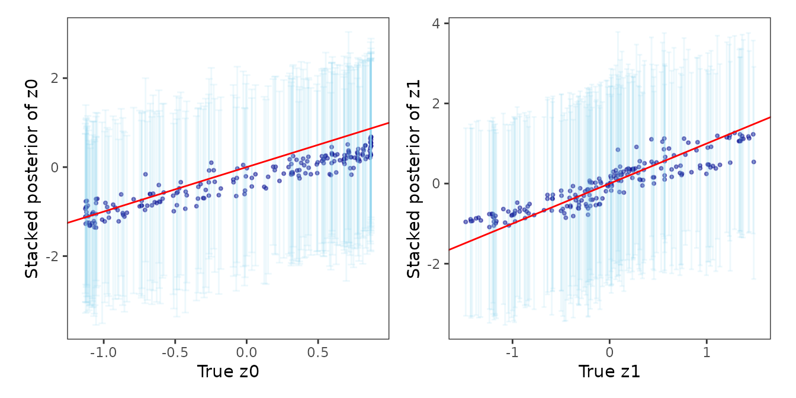